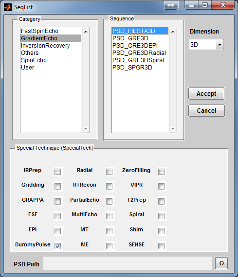
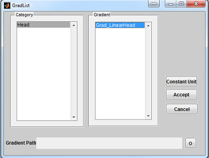
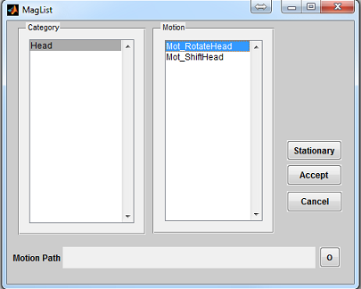

Figure 3.3: The Coil Loading Interface. An eight channel coil configuration
Coil_8ChHead from Head Category is chosen, preview image shows the coil
sensitivity at the same spatial resolution as that of the chosen digital phantom.
Prior to making any type of simulation in MRiLab, a virtual object has to be loaded
first. There are three ways of loading a virtual object: go to menu ‘Load’ and ‘Load
Phantom’ to load a user customized phantom in .mat file; go to ‘Load Phantom
Example’ to load default phantoms with MR properties mimicking human
tissues (e.g. Brain, Cartilage, Fat, etc.); go to ‘Load Phantom from XML’ to
load a configurable phantom from XML file (Section 5.3). Note that for
the XML loading approach, a VObj XML file needs to be selected through
‘Load Phantom XML’ prior to loading phantom (default phantom XML
files are saved in the phantom XML root folder MRiLab/Config/VObj ).
If a virtual object is successfully loaded, the geometry of this phantom will show as a preview thumbnail at the top right corner of the console (Figure 3.1). The user can inspect the central slice of phantom property maps (T1, T2 and Rho etc.) using the pop-up menu above the thumbnail. To inspect all slices, the user can click ‘Display’ button to open a separate display window from MatrixUser. If multiple spin species exist in the phantom, the user can also inspect different spin type by using ‘Spin Type’ pop-up menu below the thumbnail. Moreover, a list of complete phantom properties of the virtual object is provided at the ‘Virtual Object Property’ list, the user can check properties by clicking the corresponding items. A complete property list of one virtual object typically include:
Optional property for evaluating SAR include:
MRiLab v1.3 and above introduces new functionality to simulate tissue models with multiple exchanging proton pools. The required properties for performing Magnetization Transfer (MT), Multiple Exchanging water pools (ME), Chemical Exchange Saturation Transfer (CEST) and Generalized Multi-pool exchanging Model (GM) include:
The simulation with GM tissue also requires:
More detailed content about tissue models is available in Chapter 5.3.
To inspect more details of the digital phantom, press the ‘Localizer’ button to populate the thumbnail to the main image display panel. MRiLab provides three image axes to display axial, sagittal and coronal view section of the 3D virtual object, respectively. A scroll bar beside each axes allows to change image slice along the corresponding direction, which serves as an anatomical reference for prescribing simulation parameters. For instance, the location of a green box in each axes indicating current field of view can be adjusted via free hand dragging, and the field of view location is instantly updated at ‘Field of View’ panel upon dragging.
One key feature of MRiLab is to allow simulating a wide range of MR sequences for desirable MR contrast among different tissues. MRiLab provides a sequence loading interface to allow choosing predefined sequences from default MRiLab sequence library, or choosing user customized sequences. MRiLab parses a selected MR sequence and translates the sequence waveform into specific signal which triggers simulation kernel execution. A MR sequence design toolbox is separate from this loading interface and will be explained in detail in Chapter 5.
To open a sequence loading interface (Figure 3.2), click the ‘Sequence’ button located
at the center of the main control console. Once the interface is open, the ‘Dimension’
specifies the sequence spatial encoding scheme (2D or 3D). The ‘Category’ provides a
list of sequence classes including Gradient Echo, Spin Echo, Inversion Recovery, Fast
Spin Echo, Others and User. Upon clicking one sequence category, sequences
within the selected category become available in the sequence list on the
right. Click a sequence, then press ‘Accept’ to load the selected sequence.
pressing ‘Cancel’ button will close the interface without loading any sequence.

Notice there is a ‘Special Technique (SpecialTech)’ panel below the sequence list.
If a sequence with special techniques is selected, the corresponding checkboxes beside
the special techniques will be chosen. For example, by default PSD_FIESTA3D uses
the special techniques called DummyPulse (driving transient steady-state), therefore,
by clicking PSD_FIESTA3D, the DummyPulse will be chosen accordingly. However,
you can uncheck the checkbox for avoiding DummyPulse module, but this may
cause incomplete simulation for PSD_FIESTA3D. It is recommended to
keep default selection therefore a complete sequence control is preserved for
those default sequences. On the other hand, for sequences which have no
special techniques, you can also add special technique module by checking
corresponding checkbox. This will load parameter tabs of special techniques on
the simulation control console to allow configuration. The special technique
strategy enables the ability to reuse ‘capsulized’ module for different sequences.
MRiLab provides a few default sequences under the folder /MRiLab/PSD (follow GE’s naming convention :)), notice the /PSD folder uses the same hierarchic structure scheme as that of the loading interface. Typically a new sequence can be saved anywhere, however it is recommended to save the sequence under those predefined categories under /PSD so they are visible to the loading interface. However, if a customized sequence is not directly visible to the loading interface, it can also be loaded using PSD loading button marked as ‘o’ at the bottom of the loading interface. If PSD loading button is used, loading interface will ignore normal sequence selection.
MRiLab provides a few predefined MR sequences including
To simulate multi-transmitting and receiving coil array, MRiLab provides a coil loading interface to allow choosing different coil configurations for Tx (i.e. Transmitting) and/or Rx (i.e. Receiving). MRiLab translates coil configuration and computes a B1+/B1- field accordingly. For multi-transmitting coil, each coil element can be treated separately and receives individual RF signal source. This allows to investigate B1 shimming and multiple RF excitation techniques. For multi-receiving coil, each coil element also connects to an individual signal channel and produces signal according to its specific coil sensitivity. This allows to investigate different coil encoding methods such as parallel imaging. The coil loading interface provides functions to load coil configuration. A coil design toolbox is separate from loading interface and will be explained in detail in Chapter 5.
To open a coil loading interface (Figure 3.3), click the ‘Coil’ button located at the
center portion of the console. The ‘Category’ list specifies different coil configuration
category based on anatomical structure. The ‘Coils’ list beside the ‘Category’ list
provides coil configuration within the selected category. Upon clicking a coil
configuration, the interface will calculate the coil sensitivity map and display it in the
preview axes. The user can specify displaying resolution using the ‘Precision’
with the highest spatial resolution defined as the same resolution of digital
phantom. Moreover, the user can specify color map from ‘Jet’,‘Gray’ or
‘Hot’. Pressing ‘Accept’ will load the selected coil configuration. However,
pressing ‘Cancel’ button will close the interface without loading any coil
configuration. If an uniform unit coil sensitivity is desired, press ‘Uniform’ button
to load that. By default, MRiLab uses an uniform unit coil sensitivity for
both RF transmitting and receiving. To indicate coil mode, the user needs
to specify ‘Coil Type’ as either Tx for transmitting or Rx for receiving.
MRiLab provides a few default coil configuration under the folder /MRiLab/Config/Coil, notice the /Coil folder uses the same hierarchic structure scheme as that of the loading interface. Typically a new coil configuration can be saved anywhere, however it is recommended to save the coil configuration folder under predefined categories therefore they are visible to the loading interface. However, if a customized coil configuration is not directly visible to the loading interface, it can also be loaded using Coil loading button marked as ‘o’ at the bottom of the loading interface. If Coil loading button is used, loading interface will ignore normal coil selection.
MRiLab provides a few predefined coil configuration including
The generated B1 and E1 field is scaled by two factors. ‘B1Level’ is a linear scale factor for B1. The input B1+ field at a magnitude of B1Level produces nominal flip angle. ‘E1Level’ is a linear scale factor for E1. When calculating time varying SAR, the input E1+ field is scaled by an number of nominal RF amplitude normalized by E1Level. These two factors are adjustable at parameter list in Chapter 3.8.
Some simulation studies require non-uniform static magnetic field. The situation include studies to investigate susceptibility artifact and to develop robust sequences in related to filed inhomogeneity. MRiLab provides a magnet loading interface to allow loading customized B0 field perturbation map (i.e. dB0 map, a map for indicating main field variation). A magnet design toolbox is separate from loading interface and will be explained in detail in Chapter 5.

To open a magnet loading interface (Figure 3.4), click the ‘Magnet’ button
located at the center of the console. The ‘Category’ list specifies different magnet
category based on anatomical structure. The ‘Magnet’ list beside the ‘Category’ list
provides magnet within the selected category. Upon clicking a magnet file,
the interface will compute a dB0 map and display it in the preview axes.
Pressing ‘Accept’ will load the chosen magnet profile. Pressing ‘Cancel’ button
will close the interface without loading any profile. If an uniform B0 field
(i.e. zero dB0) is desired, press ‘Uniform’ button to load that. By default,
MRiLab uses an uniform B0 field for simulation which is equivalent to the
ideal condition without field inhomogeneity across the entire virtual object.
MRiLab provides default magnet profiles in the folder /MRiLab/Config/Mag, notice the /Mag folder uses the same hierarchic structure scheme as that of the loading interface. Typically a new magnet profile can be saved anywhere, however it is recommended to save the magnet profile folder under those predefined categories therefore they are visible to the loading interface. However, if a customized magnet is not directly visible to the loading interface, it can also be loaded using Magnet loading button marked as ‘o’ at the bottom of the loading interface. If loading button is used, loading interface will ignore normal magnet selection.
MRiLab provides two predefined magnet configuration including
MR spatial encoding is typically performed in a linear fashion. However nonlinear (curved) spatial encoding may serve particular purposes in some MR studies. MRiLab provides a gradient loading interface to load customized 3D nonlinear gradient field. This function can help investigate arbitrary curved gradient field for imaging simulation. With flexible sequence design, nonlinear gradient encoding techniques such as PatLoc can be simulated with minimal efforts in MRiLab. The gradient loading interface provides functions to load nonlinear gradient. A gradient design toolbox is separate from the loading interface and will be explained in detail in Chapter 5.

To open a gradient loading interface (Figure 3.5), click the ‘Gradient’ button
located at the center of the console. The ‘Category’ list specifies different gradient
category based on the anatomical structure. The ‘Gradient’ list beside the
‘Category’ list provides gradient profile within the selected category. Upon
clicking a gradient configuration, pressing ‘Accept’ will load the selected
gradient profile. Pressing ‘Cancel’ button will close the interface without
loading any gradient profile. If a constant unit gradient is desired, press
‘Constant Unit’ button to load that. By default, MRiLab uses a constant unit
gradient profile in the X, Y and Z direction for gradient simulation. This will
maintain a conventional linear spatial encoding in all three spatial dimensions.
MRiLab provides gradient profiles under the folder /MRiLab/Config/Grad, notice the /Grad folder uses the same hierarchic structure scheme as that of the loading interface. Typically a new gradient profile can be saved anywhere, however it is recommended to save the gradient profile under those predefined categories therefore they are visible to the loading interface. However, if a customized gradient is not directly visible to the loading interface, it can also be loaded using Gradient loading button marked as ‘o’ at the bottom of the loading interface. If Gradient loading button is used, loading interface will ignore normal gradient selection.
MRiLab provides one predefined example of gradient profile
MRiLab provides a mechanism to simulate imaging object movement in 3D space. The motion simulation introduces an approach to investigate time varying imaging techniques such as k-t blast and to enable development of real time image reconstruction algorithms. It also helps investigate motion insensitive sequences and test motion artifact at various conditions. The motion loading interface provides functions to load motion trajectory. A motion design toolbox is separate from the loading interface and will be used to design motion pattern in 3D space.

To open a motion loading interface (Figure 3.6), click the ‘Motion’ button located
at the center of the console. The ‘Category’ list specifies different motion category
based on the anatomical structure. The ‘Motion’ list beside the ‘Category’ list
provides motion profile within the selected category. Upon clicking a motion pattern,
pressing ‘Accept’ will load the chosen motion profile. Pressing ‘Cancel’ button will
close the interface without loading any motion profile. If no motion is needed, press
‘Stationary’ button. By default, no motion is used in MRiLab simulation.
MRiLab provides motion profiles under the folder /MRiLab/Config/Mot, notice the /Mot folder uses the same hierarchic structure scheme as that of the loading interface. Typically a new motion profile can be saved anywhere, however it is recommended to save the motion profile under those predefined categories therefore they are visible to the loading interface. However, if a customized motion is not directly visible to the loading interface, it can also be loaded using Motion loading button marked as ‘o’ at the bottom of the loading interface. If Motion loading button is used, loading interface will ignore normal motion selection.
MRiLab provides two predefined examples of motion profile
Those loading interfaces provide a mechanism to interpret and convert configuration file into MRiLab parameters. Given a successful loading, the ‘Coil Selection’, ‘Magnet Selection’,‘Gradient Selection’ and ‘Motion Selection’ fields indicate the current selected configuration. The user can change the configuration by reloading a new configuration file with abovementioned steps. If any of these fields are empty, a default setting will be used. Similar to a real scanner system, MRiLab categorizes scanning parameters into different groups and present them under different tabs in the ‘Simulation Settings’ panel (Figure 3.7). Included in any MR sequences are five typical tabs including Imaging, Advanced, Hardware, Recon and CVs. Additional tabs for special techniques become valid if those techniques are loaded from sequence selection. Below are detailed explanation for each of those parameters.

Below are a full list of supported simulation parameters in current MRiLab version. Notice that unless otherwise specified, MRiLab uses International System of Units (i.e. SI units) for all the parameters.
The ‘Imaging’ tab contains parameters relevant to image resolution, field of view and timing setting etc.
The ‘Advanced’ tab contains other imaging parameters.
The ‘Hardware’ tab contains parameters relevant to system hardware setup.
The ‘Recon’ tab contains parameters relevant to image reconstruction.
The ‘CVs’ tab contains Controllable Variables (CV, again follow GE’s naming convention) which exist in the global scope of sequence design. They are designed for transferring values among multiple MR sequence modules. The user can use them for customized sequence.
The Special Technique (SpecialTech) contains multiple tabs from which one or more are loaded based on sequence configuration and user choice.
The current MRiLab version supports two types of parallel computing mechanisms: GPU based parallel computing using CUDA and multi-threading CPU based parallel computing using OpenMP. As mentioned before, GPU support requires NVIDIA GPU with CUDA capability (shader model 2.0 and above). The OpenMP is, however, supported by most of modern multi core CPU. If both GPU and CPU are available, the user can choose to use one of these two methods. To switch parallel computing methods, go to ‘Parallel’ menu and ‘Select Engine’ and choose available GPU or CPU devices.